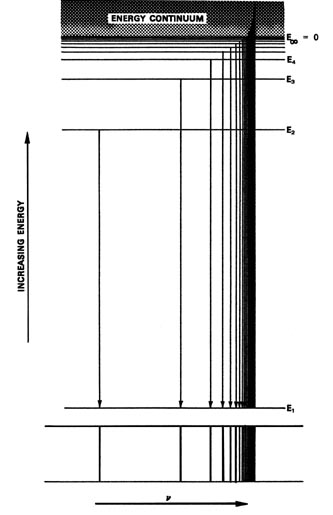

An Introduction to the Electronic Structure of Atoms and MoleculesProfessor of Chemistry / McMaster University / Hamilton, Ontario
|
The motion of the electron is not free. The electron is bound to the
atom by the attractive force of the nucleus and consequently quantum mechanics
predicts that the total energy of the electron is quantized. The expression
for the energy is:
| (1) |
|
|
where m is the mass of the electron, e is the magnitude of the electronic charge, n is a quantum number, h is Planck's constant and Z is the atomic number (the number of positive charges in the nucleus).
This formula applies to any one-electron atom or ion. For example, He+ is a one-electron system for which Z = 2. We can again construct an energy level diagram listing the allowed energy values (Fig. 3-2).
Fig. 3-2. The energy level diagram for the H atom. Each line dentoes an allowed energy for the atom.
These are obtained by substituting all possible values of n into
equation (1). As in our previous example,
we shall represent all the constants which appear in the expression for
En
by a constant K and we shall set Z = 1.
| (2) |
|
|
Since the motion of the electron occurs in three dimensions we might correctly anticipate three quantum numbers for the hydrogen atom. But the energy depends only on the quantum number n and for this reason it is called the principal quantum number. In this case, the energy is inversly dependent upon n2, and as n is increased the energy becomes less negative with the spacings between the energy levels decreasing in size. When n = ¥ , E = 0 and the electron is free of the attractive force of the nucleus. The average distance between the nucleus and the electron (the average value of r) increases as the energy or the value of n increases. Thus energy must be supplied to pull the electron away from the nucleus.
The parallelism between increasing energy and increasing average value of r is a useful one. In fact, when an electron loses energy, we refer to it as "falling" from one energy level to a lower one on the energy level diagram. Since the average distance between the nucleus and the electron also decreases with a decrease in n, then the electron literally does fall in closer to the nucleus when it "falls" from level to level on the energy level diagram.
The energy difference between E¥
and E1:
|
|
is called the ionization energy. It is the energy required to pull the
electron completely away from the nucleus and is, therefore, the energy
of the reaction:
|
|
|
This amount of energy is sufficient to separate the electron from the
attractive influence of the nucleus and leave both particles at rest. If
an amount of energy greater than K is supplied to the electron,
it will not only escape from the atom but the energy in excess of K
will appear as kinetic energy of the electron. Once the electron is free
it may have any energy because all velocities are then possible.
This is indicated in the energy level diagram by
the shading above the E¥
= 0 line. An electron which possesses and energy in this region of the
diagram is a free electron and has kinetic energy of motion only.
The Hydrogen Atom Spectrum
As mentioned earlier, hydrogen gas emits coloured
light when a high voltage is applied across a sample of the gas contained
in a glass tube fitted with electrodes. The electrical energy transmitted
to the gas causes many of the hydrogen molecules to dissociate into atoms:
|
|
The electrons in the molecules and in the atoms absorb energy and are
excited to high energy levels. lonization of the gas also occurs. When
the electron is in a quantum level other than the lowest level (with n
= 1) the electron is said to be excited, or to be in an excited level.
The lifetime of such an excited level is very brief, being of the order
of magnitude of only 10-8 sec. The electron
loses the energy of excitation by falling to a lower energy
level and at the same time emitting a photon to carry off the excess
energy. We can easily calculate the frequencies which should appear in
the emitted light by calculating the difference in energy between the two
levels and making use of Bohr's frequency condition:
|
|
Suppose we consider all those frequencies which appear
when the electron falls to the lowest level, n = 1,
| (3) |
|
Every value of n substituted into this equation gives a distinct value for v. In Fig. 3-3 we illustrate the changes in energy which result when the electron emits a photon by an arrow connecting the excited level (of energy En) with the ground level (of energy E1). The frequency resulting from each drop in energy will be directly proportional to the length of the arrow. Just as the arrows increase in length as n is increased, so v increases. However, the spacings between the lines decrease as n is increased, and the spectrum will appear as shown directly below the energy level diagram in Fig. 3-3.

Fig. 3-3. The energy changes
and corresponding frequencies which give rise to the Lyman series in the
spectrum of the H atom. The line spectrum degenerates into a continuous
spectrum at the high frequency end.
Each line in the spectrum is placed beneath the arrow which represents the change in energy giving rise to that particular line. Free electrons with varying amounts of kinetic energy (½mu2) can also fall to the n = 1 level.
The energy released in the reversed ionization reaction:
|
|
will equal K, the difference between E¥
and E1, plus ½mu2,
the kinetic energy originally possessed by the electron. Since this latter
energy is not quantized, every energy value greater than K should
be possible and every frequency greater than that corresponding to
|
|
should be observed. The line spectrum should, therefore, collapse into a continuous spectrum at its high frequency end. Thus the energy continuum above E¥ gives rise to a continuum of frequencies in the emission spectrum. The beginning of the continuum should be the frequency corresponding to the jump from E¥ to E1, and thus we can determine K, the ionization energy of the hydrogen atom, from the observation of this frequency. Indeed, the spectroscopic method is one of the most accurate methods of determining ionization energies.
The hydrogen atom does possess a spectrum identical to that predicted by equation (3), and the observed value for K agrees with the theoretical value. This particular series of lines, called the Lyman series, falls in the ultraviolet region of the spectrum because of the large energy changes involved in the transitions from the excited levels to the lowest level. The first few members of a second series of lines, a second line spectrum, falls in the visible portion of the spectrum. It is called the Balmer series and arises from electrons in excited levels falling to the second quantum level. Since E2 equals only one quarter of E1, the energy jumps are smaller and the frequencies are correspondingly lower than those observed in the Lyman series. Four lines can be readily seen in this series: red, green, blue, and violet. Each colour results from the electrons falling from a specific level, to the n = 2 level: red E3 ® E2; green, E4® E2; blue, E5® E2; and violet E6 ®E2. Other series, arising from electrons falling to the n = 3 and n = 4 levels, can be found in the infrared (frequencies preceding the red end or long wavelength end of the visible spectrum).
The fact that the hydrogen atom exhibits a line spectrum is visible proof of the quantization of energy on the atomic level.
 |
|
|